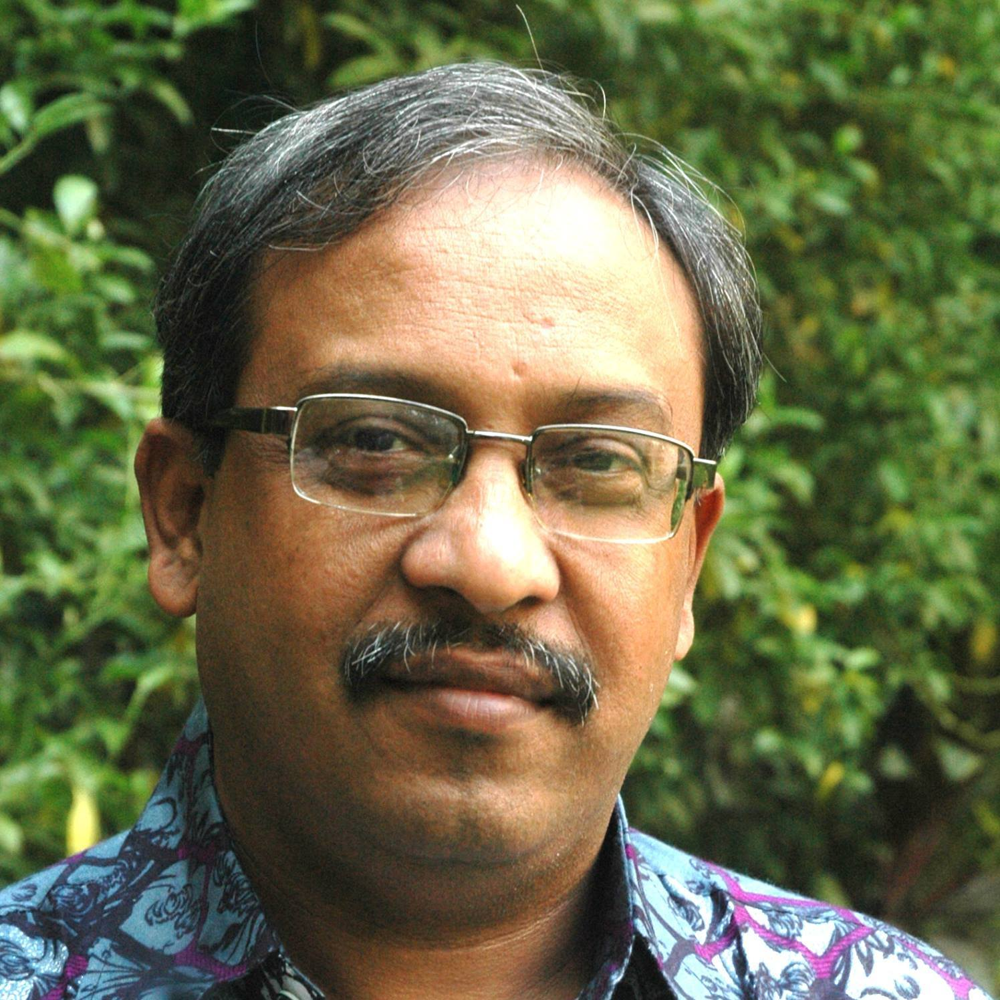

<main class="mdl-layout__content">
    <div class="mdl-grid portfolio-max-width">
        <div class="mdl-cell mdl-cell--12-col mdl-card mdl-shadow--4dp">
            <div class="mdl-card__title">
                <h2 class="mdl-card__title-text">আমার সম্পর্কে</h2>
            </div>
            <div class="mdl-card__media">
                
            </div>
            <div>
              
            </div>
            <div class="mdl-grid portfolio-copy">
                <h3 id="abdalName" class="mdl-typography--headline">সৈয়দ আবদাল আহমদ</h3>
                <div class="mdl-card__supporting-text no-padding ">
                    <p id="abdalDesc">
                      জন্ম ১৯৬২ সালে ব্রাহ্মনবারিয়ার নাসিরনগর উপজেলার নাসিরপুর গ্রামে। জাহাঙ্গীরনগর বিশ্ববিদ্যালয় থেকে রশায়ানে Bsc (Hons.) Msc। তরুণ বয়সেই সাংবাদিকতা শুরু ঢাকার দৈনিক দেশ পত্রিকায় লেখা প্রকাশের মাধ্যমে। ১৯৭৮ থেকে ১৯৮১ সাল পর্যন্ত চট্টগ্রামের দৈনিক নয়াবাংলা, ঢাকার দৈনিক আখবার ও দৈনিক কিষাণ পত্রিকায় হবিগঞ্জ প্রতিনিধি ছিলাম। ১৯৮২ সালে জনপ্রিয় পত্রিকা দৈনিক বাংলার বিশ্ববিদ্যালয় রিপোর্টার হিসেবে যোগ দিয়ে এক যুগেরও বেশি সময় এই পত্রিকায় কাজ করার অভিজ্ঞতা। এ সময় সাংবাদিক হিসেবে সুখ্যাতি অর্জন করি। দেশের দিকপাল সম্পাদক কবি শামসুর রাহমান, আহমেদ হুমায়ুন, তোয়াব খান, আতাউস সামাদ, ফৌজুল করিম ও শাহাদাত চৌধুরির তত্তাবধাওনে কাজ শিখেছি।
                    </p>
                    <p id="abdalDesc">
                      পরিবেশ সাংবাদিকতায় বিশেষ অবদানের জন্য ১৯৮৮-১৯৮৯ সালে পরপর দুবার জাতিসঙ্ঘ সংস্থা এস্কাপের সহযোগিতাই প্রবর্তিত 'এস্কাপ-FEJB' পুরুষকার লাভ করি। ১৯৯০ সালে 'হোটেল রেস্তরাই কী খাচ্ছেন' শীর্ষক অনুসন্ধানমূলক সিরিজ রিপোর্টের জন্য সম্মানজনক ফিলিপ্স পুরুষকার লাভ। ১৯৯২-১৯৯৬ পর্যন্ত প্রধানমন্ত্রীর উপপ্রেসসচিব হিসেবে দায়িত্ব পালন। সরকারি চাকরির দায়িত্ত শেষ করে পুনরায় সাংবাদিকতায় ফিরে দৈনিক বাংলা, দৈনিক জনকণ্ঠ, দৈনিক দিনকাল ও রাষ্ট্রীয় সংবাদ সংস্থা বাসস এ কাজ করি।
                    </p>
                    <p id="abdalDesc">
                     বর্তমানে দৈনিক আমার দেশের নির্বাহী সম্পাদক। জাতীয় প্রেস ক্লাবের বেবস্থাপনা কমিটিতে ১৬ বছর বিভিন্ন পদে দায়িত্ব পালন। প্রেস ক্লাবের ২০১১-২০১২ ও ২০১৩-২০১৪ মেয়াদে নির্বাচিত সাধারণ সম্পাদক। বাংলা অ্যাকাডেমির আজীবন সম্পাদক। জাতিসঙ্ঘের সামাজিক শীর্ষসম্মেলন, নারী শীর্ষসম্মেলন, ওআইসি, ন্যাম, সারক শীর্ষসম্মেলন সহ বিভন্ন আন্তর্জাতিক সম্মেলন এ যোগ দান। পেশাগত ও সরকারি কাজে ২৫ টেরো বেশি দেশে ভ্রমন।
                     </p>
                </div>
            </div>
        </div>
    </div>
    {% include footer.html %}
</main>
